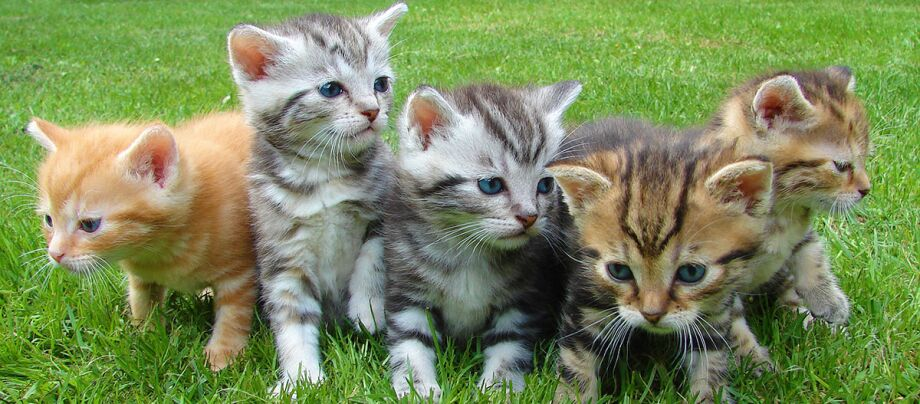

Il gatto europeo
Se cerchi un felino robusto e dal carattere equilibrato, il gatto europeo potrebbe fare al caso tuo. Ama poter scorrazzare all'aperto e ha un carattere piuttosto caparbio. Il suo aspetto è molto simile a quello del gatto comune (o gatto soriano): alcuni padroni rimangono infatti di stucco quando, durante la prima visita veterinaria, scoprono che il loro normalissimo micetto domestico è in realtà un gatto europeo di razza pura.
Magazine
Grazie all’incrocio con il persiano, l’indole del gatto europeo è generalmente più tranquilla rispetto a quella di un gatto domestico comune. Si tratta di una razza mediamente più calma ed equilibrata di altre, il cui bisogno di girare libero è meno marcato; ciononostante, ama difendere il proprio territorio da qualsiasi infiltrato. Il carattere del gatto europeo dipende molto dal singolo animale; ci sono gatti coccoloni così come esemplari più scontrosi. Qualora tu non possa concedere al tuo gatto di girare all’aperto in semilibertà, dovresti per lo meno mettergli a disposizione un balcone o un giardino in sicurezza.
-
carattere del gatto europeo
- piace a giocare
- dolce
- svelta
- cura ed esigenze del gatto europeo
- i colori del gatto europeo
- la storia del gatto europeo
Cura ed esigenze del gatto europeo
Il manto corto e folto del gatto europeo non necessita di cure particolari. Spazzolarlo regolarmente può comunque essere d’aiuto durante il periodo della muta in primavera, anche per evitare che l’animale ingerisca palle di pelo. Inoltre, molti gatti adorano essere spazzolati, vivendo la cura del pelo come un momento di benessere. Per chi lavora fuori casa, è consigliabile considerare di prendere almeno due gatti: il gatto europeo è sì adatto alla vita da appartamento, ma meglio se con un compagno di gioco. Per quanto concerne la salute, il gatto europeo è generalmente robusto e poco cagionevole. Con gli esemplari in semilibertà, tuttavia, è necessario verificare periodicamente l’eventuale presen
